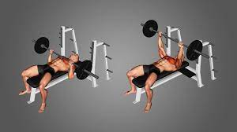
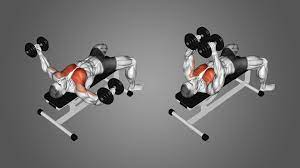
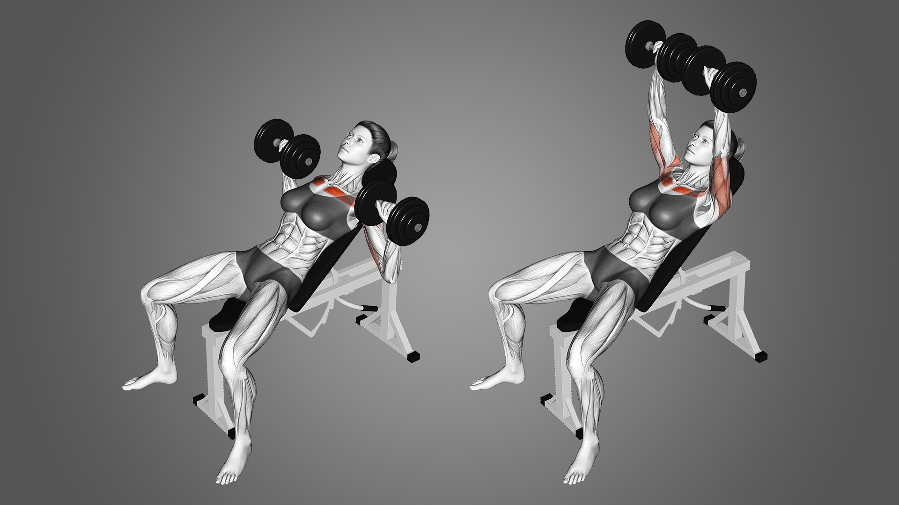
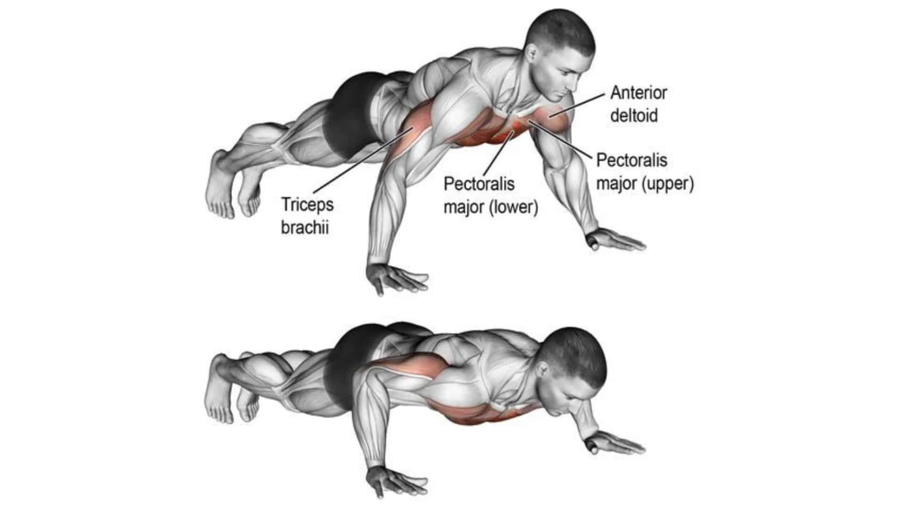
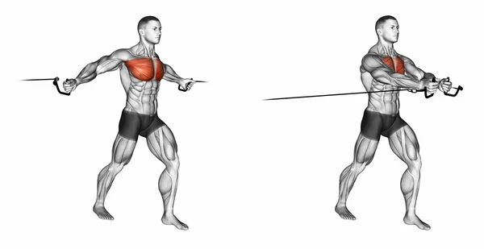
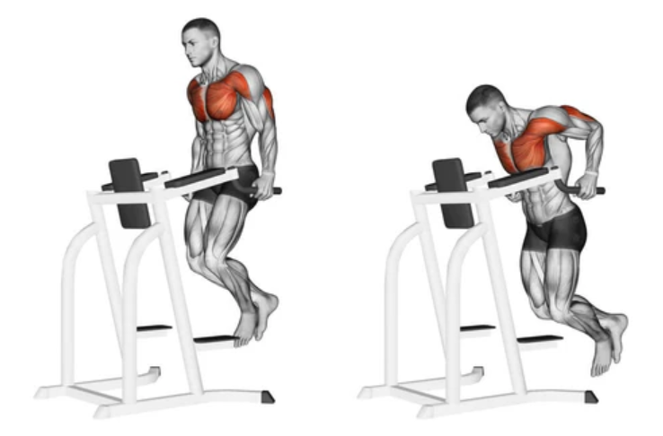
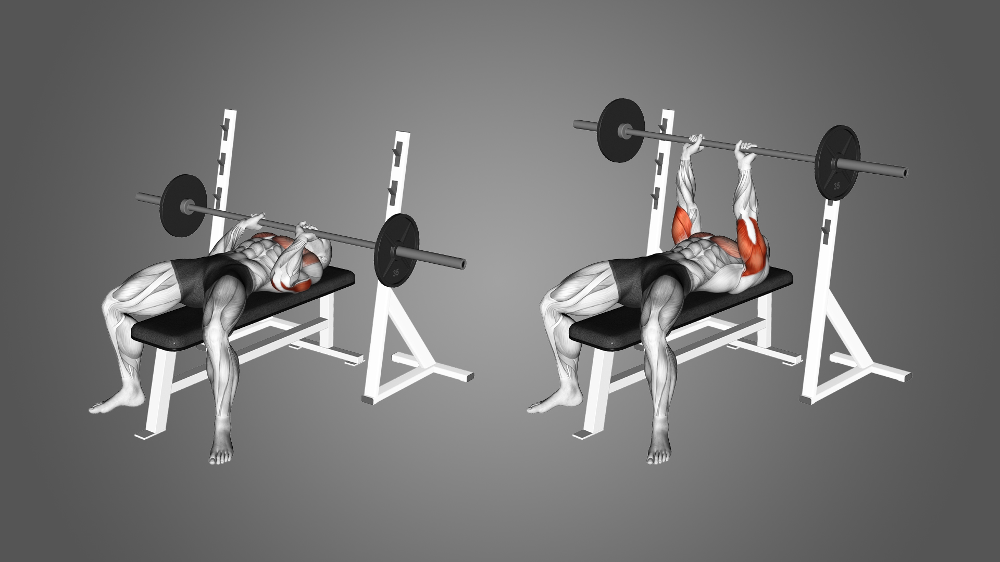
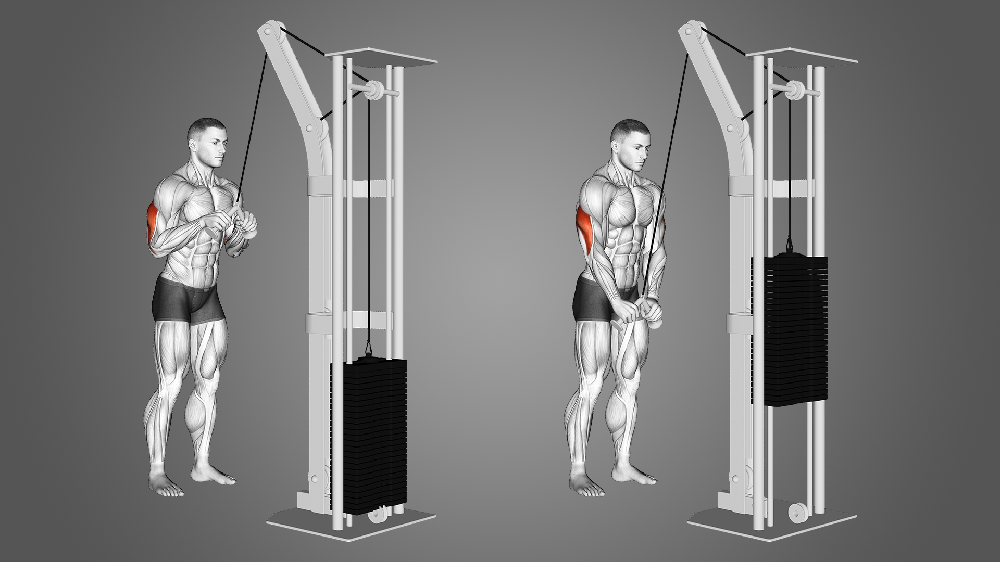
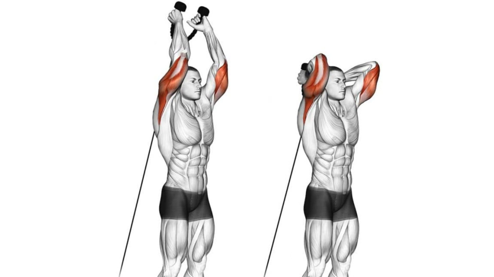
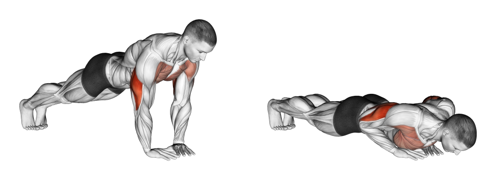

7 recommended exercises for chest muscles:
- Barbell Bench Press: This classic compound exercise is highly effective for building overall chest strength. Lie on a flat bench, grip the bar slightly wider than shoulder-width apart, lower it to your chest, and press it back up. 
- Dumbbell Flyes: This exercise targets the outer portion of the chest. Lie on a flat bench, hold dumbbells directly above your chest with palms facing each other, slowly lower the weights out to the sides, and then bring them back up, squeezing your chest muscles. 
- Incline Dumbbell Press: This exercise targets the upper chest. Set an adjustable bench at a 45-degree angle, hold dumbbells at shoulder level, and press them up and slightly inward until your arms are fully extended. 
- Push-Ups: This bodyweight exercise engages the chest muscles along with the shoulders and triceps. Start in a plank position with hands slightly wider than shoulder-width apart, lower your chest towards the ground while maintaining a straight line, and push back up. 
- Cable Crossovers: Using cable machines, stand in the middle, and hold the handles with palms facing down. Keeping a slight bend in your elbows, bring your hands together in front of your body, focusing on squeezing the chest muscles. 
- Decline Dumbbell Press: This exercise targets the lower chest. Set an adjustable bench at a decline angle, lie on it, hold dumbbells at shoulder level, and press them up and slightly inward until your arms are fully extended.
- Chest Dips: Using parallel bars or dip bars, support your body with locked arms and legs crossed behind you. Lower your body by bending your arms until your shoulders are below your elbows, and then push back up to the starting position. 

6 recommended exercises for triceps:
- Close-Grip Bench Press: This compound exercise primarily targets the triceps. Lie on a flat bench and grip the barbell with your hands shoulder-width apart or closer. Lower the bar to your chest and press it back up, focusing on extending your elbows.
- Tricep Dips: Using parallel bars or dip bars, support your body with locked arms and legs crossed behind you. Lower your body by bending your arms until your shoulders are below your elbows, and then push back up to the starting position.
- Tricep Pushdowns: Using a cable machine with an attached straight bar, stand facing the machine and grip the bar with palms facing down. Keep your elbows close to your sides and extend your arms downward until they are fully extended, then slowly return to the starting position.
- Overhead Tricep Extensions: Hold a dumbbell or a barbell with both hands(you can also use cable pulley), raise it above your head, and bend your elbows to lower the weight behind your head. Extend your elbows to raise the weight back up to the starting position.
- Skull Crushers: Lie on a flat bench, hold a barbell or dumbbells with arms extended above your chest, and slowly lower the weight toward your forehead by bending your elbows. Extend your elbows to raise the weight back up.
- Diamond Push-Ups: Start in a push-up position but bring your hands close together, forming a diamond shape with your thumbs and index fingers. Lower your chest towards the diamond and push back up, focusing on engaging your triceps.




